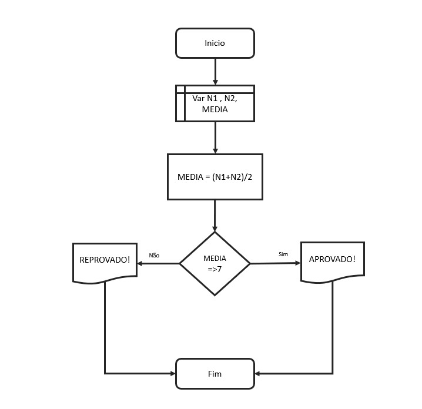

1. Visualizando a Lógica
Um Fluxograma é a representação gráfica de um algoritmo. Em vez de palavras, usamos formas geométricas para mostrar o fluxo de execução. É como o mapa de um tesouro ou a planta de uma casa: ajuda-nos a ver onde o caminho começa, onde ele se divide e onde termina.
2. Dicionário de Símbolos
Terminador
Início / Fim
Marca os limites onde o processo nasce e onde ele deve ser encerrado.
Processamento
Instrução
Representa cálculos, atribuições de variáveis ou qualquer operação interna do computador.
Entrada de Dados
Input
Utilizado quando o sistema precisa ler dados externos (como valores digitados pelo utilizador).
Saída de Dados
Display / Impressão
Apresenta os resultados finais ou mensagens importantes para o utilizador na consola ou ecrã.
Decisão
Condição
Faz uma pergunta de Sim ou Não para decidir qual o próximo caminho a seguir no fluxo.
Repetição
Loop
Indica que um bloco de instruções será repetido enquanto uma condição for verdadeira.
Pré-definido
Subrotina
Indica o uso de uma função ou processo que já foi criado e guardado em outro local.
Conector
Ligação
Utilizado para unir partes do fluxograma que estão distantes, mantendo a organização.
3. Exemplo Prático: Cálculo de Média Escolar

=4. Desafios de Desenho
Nível: Aprendiz de Cartógrafo
Soma de Magia: Desenhe um fluxograma para somar dois números e exibir o resultado final.
Energizar Sistema: Crie um fluxograma com os passos para ligar um computador até que ele esteja pronto para uso.
Nível: Explorador
Diagnóstico de Luz: Desenhe o fluxo para verificar uma lâmpada apagada: está na tomada? Se não, ligar. Se sim, está queimada? Se sim, trocar.
Mestre das Notas: Crie um fluxograma que leia duas notas, calcule a média e diga "Aprovado" se a média for maior que 6, ou "Reprovado" caso contrário.
Nível: Arquiteto do Reino
Guardião do Ouro: Desenhe o fluxograma de um Caixa Eletrónico: O usuário pede um saque. O sistema verifica se há saldo. Se sim, entrega o dinheiro. Se não, exibe "Saldo Insuficiente".